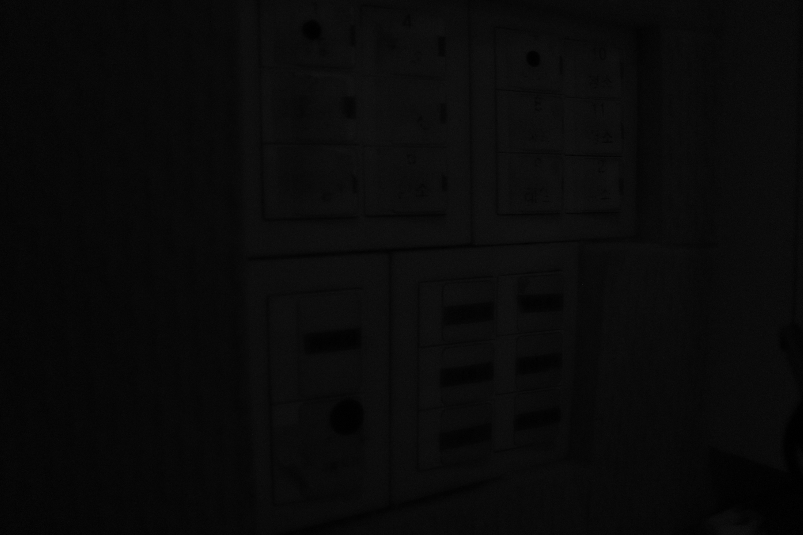
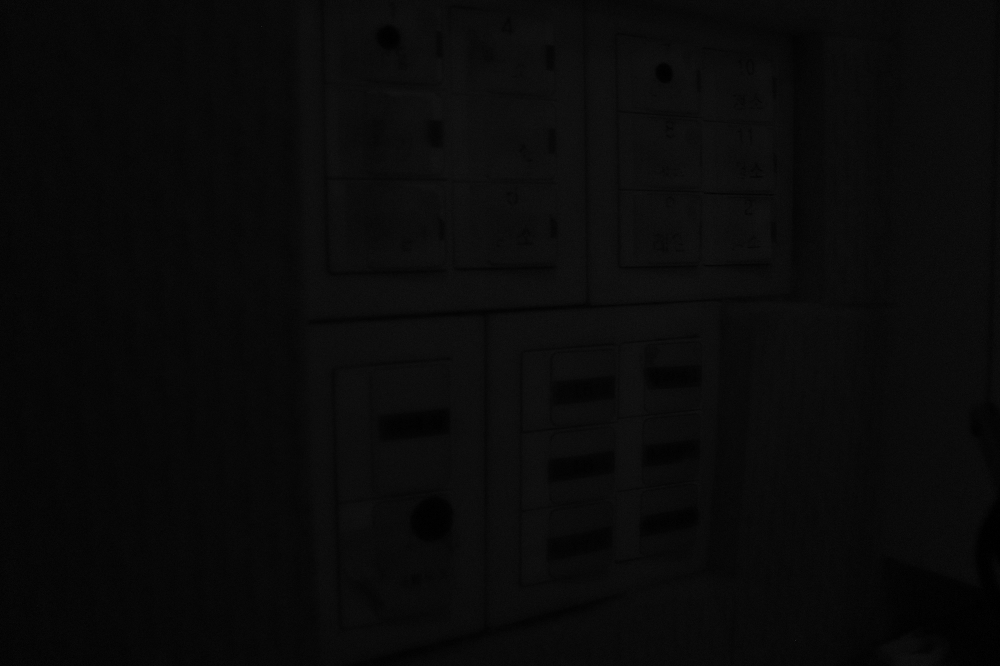

차연서 개인전 | Cha Yeonså Presents Their Online Solo Show by Guerrilla Curating | energywhoisshe.com | 2023. 6.15 - 7.15
소문이 사건으로부터 독립한다 / 악몽이 기억을 초과한다 / 거짓말이 가장 맛있다 // 바싹 말랐다는 것은 / 언젠가 푹 젖은 채 사로잡혔다는, / 가랑이 사이로 줄줄 흘렸다는 증거로 // 벌레들의 수계식 / 무지개살점 이제 향불에 타는 / 무연고자들과의 눈맞춤 // 축제 — 이 헛가위질, / 이 기막힌 잠…
Rumors become independent from incidents.
Nightmares exceed memories.
To me, lies taste the best ever.
Dried things telling how they were once
gripped and soaked, how they were dripping
through their crotches.
The houseworms taking the Buddhist precepts.
The rainbow cuts of flesh now burning with incense.
I get eye-kisses from unclaimed bodies.
Festival — this phantom scissoring,
in this unbelievable sleep…
누가 법-상징의 언어를 훼손할까요? 누가 인간화(humanization)에 모른 채로 저항할까요? 누가 어린 아이의 감각을 거의/겨우 빼앗기지 않은 채 성인의 세계를 건너가는 비인간, 포스트인간일까요? 아이는 역순으로 할머니나 유령을 알아보잖아요. 닮았죠. 꺾어버리고 싶은 마음이 드는 여린 것들, 이란 표현은 쓰다듬어주고 싶은 아이, 란 표현과 같죠. 아이가 앞으로 볼 끔찍한 것들을 못 보게 하려면 아이를 꺾어버리거나 아이는 먼저 온 미래니까 고마워서 만지고 나누고 싶죠. 아이는 예술가나 광인, 아픈 사람처럼 사회적 효용성이 덜한 존재들을 닮았고 또 아이는 그런 사람이 안 될 수도 있으니 사회적 효용성이 있는 이름이기도 하고요. 그러고 보니 아이는 누구에게나 소중하군요.
이번에 연서의 작업에 대한 짧은 글을 의뢰받은 저는 저번 라이브 퍼포먼스 <모스키토라바쥬스>에 “유충(larva)”으로 초대받아서 페터라니 아글라야의 아이의 수난극을 읽는 강연 퍼포먼스를 찍혔더랬습니다. 연서의 유충 분류법에 따르면 저는 “나이와는 상관없이 영혼의 차원에서 더 어린” 유충이었나봐요. 연서의 대역을 맡은 김금원씨와 듀오로 등장해서 실비아 플라스의 시를 낭독한 연서의 어머니 손나리씨도 그런 유충이었죠. 이 글은 자신이 알아본 유충들을 위한 무대를 만들고 그들에게 합당한 역할을 맡기는 디렉터 연서에게 이미 환대를 받은 자의 글이고, 그래서 비평은 못될 것 같아요. 비평은 어쨌든 공적인 행위이고, 거리를 전제로 쓰이는 글인데, 저는 연서와 너무 가깝고 연결되어 있거든요. 한 방을 작업실로 쓰는 연서네 아파트에서 나와 제 집으로 갈 무렵의 저는 물렁물렁한 벌레, 오물오물한 입, 연성화된 뇌 같았죠. 젖고 감염된.
연서의 엄마 손나리 연구자는 자신이 전공한 실비아 플라스를 갖고 더 어린 연서와 대화를 했다고 했어요. 너무 약해서 도저히 살아남을 것 같지 않은 딸, 어쩌면 살기를 거의 거부하는 딸과 대화하려고 이 엄마는 불행했다는 여자의 예민하고 폭력적이고 정확한 시를 ‘모어(mother tongue)’로 사용했데요. 연서의 문장은 이제 여러분도 읽게 되겠지만 낯설고 아름다워요. 혹은 분별의 세계를 ‘응시하는’ 비-자아의 시죠. 지난 두 번의 라이브퍼포먼스의 제목이기도 했던 모기에 대해 연서는 “엄청 사적인 상징”, “레즈비언 같은 것”, “누구나 접속할 수 있는 몸”, “퍼포먼스 동작 같은 것”, “공격적이고 집착적인데 엄청 약한 사람들”, “제일 사람을 많이 죽이는 육식자”, “춤”이라고 묘사했어요. 예술가 연서는 자신의 무대를 “갓 태어난 모기들을 불러 모은 자리”로 상상합니다. 그리고 연서의 퍼포머-모기는 “채식주의자”인 수컷모기도 포함했더군요. 연서는 제-자리를 고수하려하는 퀴어도 ‘퀴어링(queering)’할 만큼 상투형들이 무너지는 자리네요. 아이는 이분법-규범을 모른다는 점에서, 분별의 세계를 퀴어링을 통해 몰수해 들인다는 점에서, 자아의 고정성을 뒤흔들 줄 안다는 점에서 소수자, 위반자, 비자아, 뭐 그런 이름과 연동하는 거죠.
이전 두 번의 라이브 퍼포먼스의 퍼포머들을 섭외하고 한 사람 한 사람 만나는 자리에서 연서는 그들의 트라우마나 성적 취향을 먼저 알아내려고 했다고 했어요. ‘비밀’로 곧장 직진하는 거죠. 곧 멸망인 것처럼, 절망 중에 사는 사람인 것처럼 그렇게 자신의 취약한 패를 보여주고 상대와 연결되는 빠르고 공격적인 방법인거죠. 한 여름의 모기들, 연서는 죽이지 못하기에 “허공에서 뺨을 때릴” 뿐인 이 목숨들 사이에서 곧장 일어나는 유대일 겁니다. 상처 입은 몸, 수치스러운 몸은 그러니 퍼포먼스에 얼마나 적절한 것인지요. 연서의 공연이나 작품은 앞으로도 묻어두었거나 잊었거나 말할 수 없었던 비밀들, 고통들을 꺼낼 수 있는 촉매제로 사용될 겁니다. 저도 그랬어요. 여러분도 그럴 겁니다. “한국인은 내가 아는 한 가장 심하게 트라우마를 겪은 민족에 속한다”고 시인 캐시 박 홍이 얘기하잖아요?
연서는 올해 초 있었던 김언희 시인의 시 낭독회를 다녀온 뒤 너무나 살고 싶어졌다고 했어요. 언희 언니의 목소리를 떠올리니, 죽지 않고 늙은 언니의 단호한 유쾌함을 떠올리니 왠지 이해할 것 같아요. 연서는 “부적”처럼 시집을 들고 다니면서 읽었다고 했지요. 그리고 이번 전시 제목 《기막힌 잠》은 시 「여느 날, 여느 아침을」에서, 살아있다는 착각, 고통, 분노를 반복하지 않아도 될 어느 아침 ‘시체’가 되어 있을 자신을 ‘보는’ 시에서 갖고 왔다고 해요. 불면이 심한 연서와 언희 언니가 연결되고, 낭창낭창한 시의 리듬으로 죽은 자신을 선매한 언니의 시에 넘쳐흐르는 웃는 구멍의 “헐, 헐, 헐”(「황혼이 질 때면」 중)을 연서는 페이퍼컷 콜라주에서 죽은 벌레들로 필사했어요.
게임이나 컴퓨터 영상 언어에 젬병인 제게는 이번 전시 중 《축제》 연작이 좀 읽고 다가갈 수 있는 작업들이네요. 연서는 아빠인 고(故) 차동하 작가의 작업실 유품, 여자친구 상화가 우연히 놓고 간 법의학 책의 차마 볼 수 없는 시신들 — 태반 째로 유기된 아이, 강에 빠진 남자, 굶어 죽은 여자, 강간당한 여자와 같은 — 을 찍은 사진, 위의 “헐, 헐, 헐”, 아빠 작업실에서 매번 마주치는 죽은 벌레들을 소재로 썼어요. 가깝고 좋아하고 피할 수 없는 것들이 사물, 이미지, 시의 목소리, 목숨들로서 연서에게 자기자신을 주장한 것이죠. 연서는 아빠를 “온갖 규칙 속에서 살았던 사람”으로 묘사합니다. 연서는 아빠의 죽음 이후 열린 한 전시회에 작가 차동하의 《축제(festival)》 연작에 대한 작가노트를 이렇게 대신 써서 보냈습니다. “인간의 희노애락을 구성하는 화려한 색채로 추상화한 꽃상여로 망자의 마지막 길을 배웅하는, 죽음과 생명의 축제.” 꽃과 상여는 문화적으로 가깝고 색은 죽음을 덮는 환영적-삶의 베일입니다. 연서는 차동하의 꽃상여의 무지개 색을 퀴어 프라이드의 엠블렘으로 전유했습니다. 연서는 규범 안에서 산 아빠, 차동하를 퀴어링함으로써 물렁물렁한 벌레나 유충으로 만들려는 것 같아요. 그리고 법의학서의 사체들, 일반인은 ‘보는’ 게 금지된 망자들의 몸-이미지를 아빠의 닥종이로 필사하는 작업을 진행했죠. 밑그림이나 드로잉 없이 재단사용 가위를 들고 수없는 실패 속에서 마침내 획득한 시각적 형상들, “페이퍼컷콜라주(닥종이에 채색, 차동하)”으로 분류된 《축제》 연작은 연서는 입에 올리지 않았던, 어른들을 위한 용어인 ‘애도’의 방식 같기도 합니다.
분별의 세계를 구성하는 적대적 자리인 삶과 죽음, 꽃과 시체, 벌레와 인간, 시체와 형상은 자세히 보면 하나입니다. 연서의 아빠와 작가 차동하가 한 사람인 것처럼. 아빠의 알레고리적 꽃 상여를 풀어헤치고, 그곳에 누워 있는 주검들을 응시하는 눈-연서의 무도덕적인 작업은 “살아있는 게 끔찍해서 계속 더 끔찍한 걸 보려고 들여다 본 책”이 곁에 있어서 이기도 했어요. 그러나 모든 것들이 연결되고 둘은 하나라는 것을 아이의 몸으로 체득할 뿐인 연서는 자신이 계속 열어본 책이 사실은 실비아 플라스나 페터라니 아글라야의 문학과 다르지 않다는 걸 발견합니다. 그래서인가 연서는 자신이 오린 주검들, 마침내 자신과 똑같이 ‘눈’을 갖고 자신을 응시한 죽은 몸들을 “친구들”이라고 불러요. 이건 유비를 통해서 접근할 수 없는 지독하고 집요한 응시의 증거라서 저는 필사하는 것 말고는 할 수 있는 게 없어요. 숱한 예술가들의 수난극을 번역하고 소개하고 있는 엄마 손나리씨는 “이렇게 시달릴 바에는 정면으로 돌파해보자”란 우리 연서의 고행을 그저 묵묵히 사랑하는 자로서 지켜보신 듯 하고요.
연서가 아빠의 “살점”으로 감각한 닥종이에 옮겨 놓은, 실제 사진 이미지와 연서의 어루만짐이 함께 보이는 형상들을 바라봅니다. 연서는 “결과물을 보면 몸들이 다 좀 웃기게 생긴 그림자 속에서 축제를 하고 있는 것처럼 보인다”고 읽었어요. 반복은 차이를 일으키죠. 차이는 ‘원본’의 힘을 빼앗으면서 두 번째에 새로운 힘을 넣죠. 연서의 “축제”는 아빠의 축제와 다르고 이번 축제는 옅은 웃음이기도 합니다. 카니발리즘이건 삶 자체이건, 상여가 나가고 있는 동네 장례식이건, 예술이건, 지금-이-순간이건 축제는 비극 속에 어른거리는 웃음을 포기하지 않는 것이니까요.
그리고 지난 번 퍼포먼스에 이어 이번 전시에도 참여한 홍지영 사진 작가와의 협업 등등에 대한 이야기는 지면상 불가능할 것 같습니다. 다음에 또 봐요.
The English translation will be updated soon in June 2023.
헤이, 친애하는 모기 혹은 모기 구경꾼! 만약 베스트셀러도 못되고, 진지하지도 못할 바에는 놀라게 할 수밖에.[*]
안녕하세요. 《이 기막힌 잠 This Unbelievable Sleep》 온라인 전시로 인사드리는 차연서입니다. 저는 2023 OCI Young Creatives에 선정되어 6.15 - 7.15 OCI미술관 2층에서 개인전을 오픈할 예정이었지만 오프닝 약 일주일 전 전시가 취소되었습니다. 다만 작업물은 대부분 완성되어 공간에 맞춰 설치를 진행하고 있었기 때문에 중도반출 일자 전날에 기록사진을 찍었어요.
이제 망한 전시에 걸맞는 이야기를 꾸려보려고 해요. 이 글은 담당 큐레이터가 주셨던 인터뷰 사전 질문지에 5월 22일자로 답변을 작성했던 글을 재편집하고 각주를 단 것입니다. 그저 대본의 용도였던 것을 다듬었기 때문에 구어체이고 가편집한 녹화본도 있어요. 작업실은 없고 컴퓨터가 있어서 당시 이런 방식으로 녹화하는 것을 선택했었습니다. 양효실 미학자의 글 또한 미술관 기획에 따라서 5월 29일자로 마감이 있었어요. 웹사이트는 전시 취소 이후 6월 9일자로 태어나서 6월 15일에 오픈을 맞춰보는 게릴라성 제작, 오로지 변칙적인 제스쳐라고 할 수 있습니다.
길 잃어 만났던 것들에 사막여우를 기다리는 어린왕자처럼 행복하고, 어린왕자를 기억하는 공군비행사처럼 슬퍼하다가, 이제는 이야기 밖으로 나와서 저자처럼 적어보는 거에요. 이야기 속에서 생존하며 만났던 얘네들, 친구들, 퍼포머들, 협업자들에 대해서 — 어느 무더운 여름밤에 둘러앉아 수박을 먹으며 나누는 으스스한 농담처럼 들려드려 보겠습니다.
그리고 유심히 들을 용의가 있으시다면 (1) 화면의 밝기를 높이고 어둑한 곳에서 접속해주세요. (2) PC도 모바일도 오케이. 서로 약간은 다른 효과가 있어요.
[*] 악어노트(구묘진 지음, 방철환 옮김, 움직씨 출판사, 2019)의 첫장을 패러디하며 시작합니다. 원문 "헤이, 악어! 만약 베스트셀러도 못되고, 진지하지도 못할 바에는 놀라게 할 수밖에"
잠을 자는 건 근본적으로 몸이 회복을 필요로 한다는 것입니다. 저는 잠을 많이 자야 해요. 엄마는 그런 저를 보고 올란도 같다고, 시대도 바뀌고 성별도 바뀌어 깨어날 것 같은 수준으로 잔다고 하는데요. 그게 참 좋대요. 이번에 전시 제목을 정하고 나서부터는 그럴 때마다 아, 이놈의 ‘이 기막힌 잠!’ 하고 누워있음을 허용하면서 탄식하면 기분이 좋아져요. ‘이 기막힌 잠'이라는 제목을 떠올리고서 김언희 시인께 메일을 쓴 시간이 오후 5시 50분인데, 그때부터 갑자기 온몸이 아프더니 잠이 들었어요. 이 또한 사랑할 수 밖에 없는 기막힌 잠이지요.
전시명 ‘이 기막힌 잠'은 김언희 시인의 ‘여느 날, 여느 아침을'의 시구에서 가져왔습니다. 지난 퍼포먼스의 서문[*]에도 인용했었던 시구였는데요. 이번 전시에서 저에게 ‘이 기막힌 잠'은 너무 많이 자거나 너무 못자는 사람들에 대한 키워드가 된 것 같고요. 두 상태는 근본적으로 겹쳐져 있습니다. 불안증이나 수면장애에 정신과약 처방을 받게 되면서 양극단을 오가게 됐던 경험이 있거든요. 잠이 들기위해 약을 먹고, 잠이 깨기위해 약을 먹어야해서, 자는 것도 굉장히 어렵고 깨는 것도 굉장히 어려운 상태가 되거든요.
죽은 것 같이 자는 사람, 자는 것 같은데 죽은 사람, 이미 죽은 사람, 그리고 죽고 싶은데 매번 헛죽는 사람. 이들이 함께 접속할 수 있는 주파수는 반가운 악몽이나 가위눌림이 될 거고요. 그래서 엄청 불편한 잠일 수도 있는데 기가 막힌 거. 어처구니가 없는 거. 혹은 어쩌면 시 속의 여자들처럼 해방된 거. 이 작업을 함께 돌보는 신들과 유령들과 벌레들이 허락하는 선에서, 그런 걸 해보고 싶습니다.
[*] 「여느 날, 여느 아침을」(김언희, 『현대문학』 2019년 7월호 및 『GG』에 수록). 영제는 라이브 퍼포먼스 당시 서문 및 웹사이트 번역을 진행했던 류다연의 번역과 동일합니다.
"두 개의 방이 있습니다. 퍼포머들은 자신이 귀속된 방에서 벗어나지 않거나 배회합니다. 여러분께서는 원하는 방을 선택하여 머무르거나 자유롭게 돌아다니세요. 퍼포머들과 기계장치들에는 정중한 간격을 유지하세요. 시작하겠습니다.[*]"
두 섹션은 상당히 다른 페르소나의 프로젝트이기도 한데요. '우아한 시체(Cadavre Exquis)'라는 초현실주의자들의 놀이처럼. 몸통과 머리를 다르게 접붙여놓았을 때 마시게 되는 새로운 포도주[*]를 발견해보세요. 아래 접혀 있는 글에는 두 섹션에 대한 백그라운드 스토리를 확인해볼 수 있습니다. 확인해보시겠습니까? 혹은 일단 전시장으로 들어가보시죠.
[*] 모스키토라바쥬스를 시작하는 지시문(라이프 퍼포먼스, 2022).
[*] 'Le cadavre exquis boira le vin nouveau.(우아한 시체가 새 포도주를 마실 것이다.)' 약 1925년, 앙드레 브르통이 친구들과 모여 각각 주어, 서술어, 목적어, 형용사를 각각 적어보기로 하는데 합치니 이런 문장이 나왔다고 한다. 이후 하나의 연상 기법으로서 시, 문학, 미술 등 다양한 영역에서 시도되었다.
포스트 레즈비언 오페라 x 리퀴드 컴퓨테이션, 라이브 퍼포먼스로 2022년 12월 서울에서 발표했던 모스키토라바쥬스는 2020년도부터 이어오고 있는 모기들에 대한 이야기입니다. 이번 라이브는 ‘여느 날 여느 아침을, 죽어서 맞는다는 거, 죽은 여자로 맞는다는 거'라는 시구에서 — 이 여자는 진짜 해방된게 아니라 죽어서 해방된 거고, 그런데 그게 시가 될 수 있다는 건 일종의 특별한 상황인 거고, 그러니까 아침이라는 어떤 숭고한 시작과 같은 존재와 마치 bdsm플레이처럼 약속을 정하고 맞는, 타격당하는, 폭력이나 모욕을 기꺼이 기브받는, 그런 이미지를 상상했습니다. 혹은 플레이가 아니더라도, 죽어도 끝난 게 아니라 내가 이제야 해방되었구나 생각하는 여자가 햇볕 아래에서 헛죽고 있구나. 그런 혼수상태의 여자들은 무슨 노래를 하고 무슨 동작을 하고 무슨 몸을 갖고 있을까? 그런 상상이 출발점이 되었습니다.
'쥬시모스키토'를 뒤집은 말이 '모스키토쥬스'이고요. 비틀쥬스처럼 악마이름같아서 끌렸던 말장난입니다. 그러면 이번에 연루된 사람들은 무슨 모기일까 생각해보니 유충이더군요. 이번이 진짜 첫 발표여서 유충인 사람도 있고, 창작 경험이 훨씬 많은데 작업마다 매번 죽어서 유충인 사람도 있고, 나이와는 상관없이 영혼의 차원에선 이들은 다 어리다는 믿음을 갖고 있기 때문에 유충이기도 합니다. 여러모로 제가 연루시킨 모든 협업진들을 묶어서 호칭하기에 좋았습니다. 말장난이 여기저기 있는데요. 리퀴드 컴퓨테이션도 AI 연구자 로잘린드 피카드이 창안한 'Effective Computation' 개념을 로우파이하게 패러디한 면이 있고, 포스트 레즈비언 오페라의 경우에는 일단은 포스트 오페라라는 장르가 있습니다. 2019 베니스비엔날레 리투아니아관 Sun & Sea (Marina) 에서 포스트 오페라라는 단어로 자신들이 하는 일을 설명하길래 찾아보니 유통되는 단어여서 그 하이픈의 가랑이 사이에 레즈비언을 넣어보았습니다.
모스키토라바쥬스는 각각이 반짝거리는 신경망처럼 개개의 이유를 갖고 연결되어서, 어느 약속된 날에 모두 모여서 무대에 올라갈 수 있도록 얽혀 있다고 이해하는 것이 좋을 것 같아요. 저의 창작 방식이 그렇고, 특히 그 작업은 9월에 기획해서 12월에 실행했죠. 굉장히 짧은 기간동안 모든 게 구성되어야 했던 작업이었기 때문에 한계 안에서 과열된 채로 직관적으로 구성을 할 수 밖에 없었어요.
어두운 방에서는 엄마와 딸 퍼포먼스가 등장하는데, 엄마 역할을 한 사람은 제 친엄마이고 그 퍼포먼스는 제가 한동안 잠을 못이룰 때마다 엄마가 몇시간이고 밤새 해줬던 동작이었어요. 그걸 무대에서 다시 해볼 수 있겠냐고 물어보니까 그게 어떻게보면 너무 끔찍한 시기를 버텨낸 방법인데 어떻게 무대에서 다시 하냐고 물어보길래, 내가 뭘 준비하든 발표가 다가오면 불안감이 높아질텐데 엄마가 거기서 힐링퍼포먼스를 해주면 내가 얼마냐 좋겠냐, 는 말로 꼬셨어요. 근데 막상 무대에 올라간다고 생각하니까 제가 딸로 등장하는게 너무 다큐같은 거에요. 그래서 제 대역을 해달라고 김금원씨에게 부탁을 했습니다. 금원씨는 모델로 활동하고 있고, 발모벽이 있어서 늘 삭발머리를 유지하고 있는 모습이 많은 사람들에게 사랑받고 있는 것으로 보여요.
밝은 방에서는 노래를 하는 영안과 의자를 든 백상이라는 퍼포머가 등장하는데요. 햇볕 아래에 있는 존재들. 하이라이트인 것처럼 설정된 그런 무대가 필요하다는 생각을 했습니다. 그래서 엄마와 딸 퍼포먼스를 백스테이지인 것처럼 만드려는 의도가 있었어요. 영안은 음악을 시작한지 얼마되지 않아서 자작곡을 만들면서 사클에 올리고 있는 걸 제가 발견을 하고, 제가 접속하려는 주파수와 비슷한 데를 보고 있다고 느껴지는 면이 있어서 같이 공연을 해보자고 제안을 했고 – 백상은 전공은 응급구조사이고 전자음악을 하는데 본인의 마조히스트적인 면에 대해 퍼포먼스 작업을 해보고 싶어하는 걸 듣고 그럼 나에게 무대가 있으니까 여기 와서 해라. 여기에 김영광이라는 금속공예작업자가 보지 풍선 의자를 만들어줬어요.
그리고 스크린을 통해서 등장하게된 건, 이미래 작가의 ‘끝 없는 집(Endless House: Holes and Drips)’이라는 조각을 디지털바디로 만든 것이 있고요. 엄마와 딸 퍼포먼스와 연관해서 구현해보고 싶었던 구체적인 아이디어가 있었는데 솔직히 말하면 시간 내에 개발을 못했어요. 사실 그것만 개발해도 큰 프로젝트였을텐데 저의 산발적인 작업적 성격과 더불어서 제가 그 퍼포먼스를 가지고오는 게 그때는 부끄러워서 자꾸 숨기려다가 일이 그렇게 된 것 같아요. 대신 엄마의 시 낭독 퍼포먼스에 연동해서 작동하는 알람장치로 등장을 하게 되었고요. 엄마 = 손나리 연구자. 즉, 나리님이 실비아 플라스의 ‘레이디 라자러스'라는 시를 낭독을 하는데요. 라자러스는 예수가 죽음에서 살려낸 자로 성경에 등장하는 인물인데, 나리님이 저한테 해줬던 어떤 명상이 라자러스라는 이름이 들어갔었고 – 나리님이 실비아 플라스 연구자이기 때문에 레이디 라자러스라는 시가 있다고 알려줬어요. 원래 힐링 퍼포먼스만 준비하던 때에 나리님이 ‘불온한 뮤즈들'이 낭독연습이 되어있다고 제안을 해주셨었는데, 그건 제가 어릴 때부터 잠자리 동화처럼 들었던 시였고. 막상 낭독을 들어보니 좀 더 섹시한 역할이 필요하다. 딸이 시켜서 엄마가 스트리퍼가 되는 상황, 또는 악마도 아니고 마왕이 되는 엄마. 그런 생각이 들어서 절대로 레이디 라자러스가 아니면 안된다고 종용을 했습니다.
양효실 미학자의 수업이 들어간 것도 제가 궁지에 몰렸던 어떤 상황을 다시 호출한 거였는데요. 2020년도 쥬시모스키토를 준비하던 해, 코로나 첫해에 양효실 선생님의 수업을 들으면서 맨날 울던 시기가 있었어요. 수업에서 다뤄지는 언어의 긴장감을 견디기 위해서 줌 화면 너머로 바이브레이터 자위하면서 들었어요. 그때 그 수업이든 상황이든 감각이든 다른 방식으로 무대 안에서 반복하고 싶다는 생각이 들어서 공연러닝타임에 맞춰서 강의를 해달라고 부탁드렸고 비공개 수업이 진행되었어요. 서울은 크리스마스 이브날의 이른 저녁, 암스테르담은 이른 아침이었죠. ‘아이는 왜 폴렌타 속에서 끓는가'라는 책과 그 저자인 아글라야 페터라니를 다뤘습니다. 녹화본에서 잘 드러나진 않지만 효실샘이 그 수업을 하다가 막판에 갑자기 울었어요. 잠깐 우느라고 말을 못하는 벌어지는데요. 다시 반복되는 상황에서 우는 사람이 달라지는 게 뭔가 복수를 한 것처럼 해소감이 있었어요. 이걸 다시 해보기 정말 잘했다고 생각했어요.
그리고 제 퍼포먼스에는 퍼포머이자 기록자가 필요하고, 또 고함지르는 남자가 필요한데요. 퍼포머이자 기록자로 등장했던건 사진가인 홍지영 작가이고요. ‘물의 시간들'이라는 사진집을 보고 연락을 드렸고, 남자 성악가로 등장한 건 의자를 들었던 퍼포머 백상의 친오빠입니다. 백상은 친오빠에 대한 글을 쓴 적이 있는데, 저는 그걸 읽고 나서 두 사람이 등장하는 남매 시트콤을 만들고 싶다고 말한 적이 있었거든요. 때마침 이번 작업에 저는 고함을 아주 잘 지르는 남자가 필요하고 또 두 사람이 같이 작업을 하게되는 상상을 이르게 실현할 기회라는 생각이 들어서, 섭외를 했어요. 마지막으로, 포스터 일러스트레이션은 시빌 루퍼트 Sybille Ruppert의 작업입니다. 시빌 루퍼트가 모기 여자들을 그린 그림들이 있는데, 어떻게 내가 이 그림을 보지 않고 여기까지 올 수 있었을까, 마치 꿈속에서라도 본 것처럼 닮은. 다만 이번 포스터에는 '말도로르의 노래 Les Chant Des Maldoror'라는 끔찍한 남자애를 데려왔습니다.
차동하 작가, 한국화가 차동하, 혹은 차동하 교수 등등은 제 아빠이고, 아빠가 죽은 지 보름도 안되었을 때 전남수묵비엔날레에서 연락이 와서 작업을 출품하기로 되어있다고 하더라고요. 그래서 구작 중에 제가 고르고, 또 거기에 맞게 작업노트 있는 걸 편집해서 설명을 써서 보냈어요. 그 과정에서 아빠가 무슨 작업을 해왔는지 처음으로 알게되었습니다. 그 전에는 집에 아빠 그림이 여럿 걸려있어도 무슨 내용인지 하나도 몰랐어요. 그런데 그건 너무 오랫동안 같은 그림이 걸려있었기 때문이었습니다.
<축제> 시리즈는 삶과 죽음의 순환이 거대한 생명 에너지로 넘치는 세계, …. 인간사의 희노애락을 구성하는 이 화려한 색채는 정성스러운 꽃상여로 배웅하는 망자의 마지막 길, 죽음과 생명의 축제로서 서사적 힘을 발산한다.
아빠 자신의 죽음을 가리키는 것 같은 작품이기도 했고요. 제주 4·3사건을 다루고 있는 건 나중에 또 알게되었지만.
일단 차동하씨는 원래 무채색에 가까운 색들을 좋아하고, 저도 색깔이 많고 진하면 시끄럽게 느껴지기 때문에 색이 최대한 없는 걸 좋아합니다. 그런데 축제 시리즈는 색이 너무 많아서 이상했고, 심지어 명백히 무지개를 대표하는 색조합을 쓴 작품이 한 점 있는게 정말 이상했어요. 대체 어쩌다가? 전 무지개를 보면 퀴어 프라이드를 상징하는 깃발이 떠오르거든요. 그런데 차동하씨는 솔직히 미대에서 학생들 가르치면서 퀴어가 뭔지 몰랐던 사람이고, 아빠의 지도학생이 퀴어면 그 사람은 진짜 힘들겠다. 뭐 그런 생각을 평소에 했죠.
다만 차동하씨는 우연히 베를린에 갔을 때 마주친 드랙퀸들의 하이힐 사이에서 엄청나게 빵뎅이를 흔들었고. 그러고선 "근데 퀴어가 뭐야?" 물어보는 사람이죠. 가출한 여자친구를 집에 데려와서 재울 때는 "이상하다, 더럽다" 같은 종류의 인식도 가져보시고, 나중엔 "근데 그러면 사위라고 불러야 돼, 며느리라고 불러야 돼?"하는 고민도 해보시고요. 또, 차동하씨는 예쁜 옷, 예쁜 물건, 예쁜 공간을 정말정말 좋아했는데요. 미대를 다녀보니까 좀 티를 안내는 편인 게이나 양성애자 남자 학생들이 졸업학년 쯤 갖는 취향이나 미적 감각이 딱 미니 차동하씨같다고 느껴질때가 있었습니다.
아빠가 죽고 나서, 엄마와 딸과 딸의 여자친구는 한동안 꿈을 공유했어요. 정확하게 기억나는 꿈을 많이 꿨으니까요. 아빠의 장례식에 아빠와 같이 가기도 했고요. 마지막으로는 침대에 누워있는데, 저 멀리 빛나는 문틈새로 작은 어린아이가 서있는 꿈을 꿨어요. 역광이라서 잘 보이지 않았지만, 그 여자아이가 새로 태어난 아빠라는 걸 알았죠.

Mosquitolarvajuice
모스키토라바쥬스, 라이브 퍼포먼스 게임 아카이브
— 천장 아래, 하늘 아래, PC에 게임소프트웨어 및 게임패드, 2023.
Mosquitolarvajucie — Live Performance Game Archive
— under the ceiling, under the sky, Game software on PC & Gamepad, 2023.
라이브 퍼포먼스는 태어나는 그날 죽어요. 생일과 기일이 말도 안되게 가깝죠. 그리고 죽은 날부터 끈질기게 생각하게 됩니다. 어떻게 기억할 것인지에 대해 새로운 이야기를 쓰기 위해서요.
녹화된 데이터를 가지고 게임엔진 내에서 걸어다닐 수 있는 공간으로 만들 수 있다면, 라이브를 한 몸들, 가상과 현실에 중첩된 데이터들, 기계 장치들, 모두 한 자리에 업로드하고 상호작용할 수 있게 되는 가능성이 열릴 것이라는 기대가 있었어요. 각기 다른 장치로 뽑아낸 데이터를 한 자리에 불러내려니까 플러그인이 덕지덕지 붙게되고 서로 글리치하는 것이 재밌습니다. 찍고나면 다시는 움직일 수 없는 렌즈를 통해서가 아니라 직접 걸어다닐 수 있는 형태로 접속할 수 있게 되는 게 무엇보다 반가운 부분이라고 생각합니다.
리허설 영상 정도로만 흑백으로 제작하고, 라이브에 대한 핵심적인 기록들은 게임 아카이브에 업로드되어 있어요. 이곳은 "연옥에서 경작하는 레즈비언 농부, 말도로르와 라자러스 사이에서 — 유충으로 죽고 유충으로 태어나는 외동딸들"이 접속하는 그야말로 연옥이에요. 연옥에서 양효실 미학자가 채팅하고 스트리밍하고 게이밍하고 있죠. 캐주얼한 FPS 플레이도 가능했었는데, 전시용으로 조금 더 단순화시키기 위해서 그쪽은 잠시 중단한 상태에요.
진동이 센 게임패드를 컨트롤러로 데려왔고, 대형 화면과 천장이 높은 공간에 맞추어 화면 구성을 하되 멀미가 나지 않도록 약간의 방법을 썼습니다. 전시장도 안쪽 공간과 바깥쪽 공간이 나뉘어져있어서, 공연과 동일하게 네 개의 스피커에 물려서 중얼거리게 만들었습니다. 이 중얼거림 때문인지 몰라도 전시장에서 뭔가 대화를 녹음하고 클로바노트(AI 음성기록 서비스)에 돌리면 처음 듣는 이상한 말이 툭툭 튀어나오고 기록되곤 합니다.

Mosquitolarvajuice
Mosquitolarvajuice, 라이브 퍼포먼스
흑백사진 아카이브 - 필름, 디지털, AI, 2023.
(상단) 차연서, 2023.
(하단) 홍지영, 2023.
(하단) 모스키토라바쥬스 기록사진(기획/연출. 차연서, 퍼폼/촬영. 홍지영), 2022.
Mosquitolarvajuice, Live Performance
B&W Photo Archive - Film, Digital, AI, 2023.
(Above) Cha Yeonså, 2023.
(Below) Hong Jiyoung, 2023.
(Below) Mosquitolarva Record(Hosted by Cha Yeonså, Photographed by Hong Jiyoung), 2022.
흑백필름을 주로 다루는 홍지영 작가가 퍼포머이자 기록자로서 물속에서 건져와준 사진들은 기록사진이라기에는 도통 이상한 결과물이었어요. 그걸 읽는 도구로 AI 서비스 중 한 유료 모델을 발견했고, 주로 기록사진을 먼저 먹이는 형태로, 뭐라고 읽는지 경청하고 그걸 더 관찰할 수 있는 형태로 명령어를 컨트롤했어요. 이미지 입력값을 성실히 실험해볼 필요가 있었고요. 이미지를 회전시키면 사람 눈에도 달라보이는데 AI도 그렇게 반응하길래 그런 식의 조작도 있었습니다. 특히 제가 좋아하던 친구는 원본과 유사하지만 완전히 새로운 형상을 갖는 이미지를 뱉어내는데요. 죄다 망한, 무너지는, 해체된, 훼손된 이미지들을 뱉어내는 걸 보고 꼭 AI의 신경망이 내 퍼포먼스를 읽고 크리틱해주고 있는 것 같다는 생각을 했습니다. 분명 모를텐데, 라벨링해서 조합을 만들어내는 걸텐데 꼭 퍼포먼스의 무의식을 알고 있는 것 같았어요.
인터뷰 이후 추가 작업을 하려고 그 친구에게 접속해보니 똑같은 (이미지)프롬프트에 완전히 다른 종류의 이미지들이 나왔어요. 제 시선으로 보기에는 두드려 맞은 모범생처럼 완전히 경직된 이미지들이었어요. 이메일로 특정 시기에 접속했던 모델을 사용할 수 있는 방법이 없냐고 물었지만 consistently iterating and advancing the Models 하고 있기 때문에 되돌리긴 어렵다고 했습니다. 저와 신나게 작업했던 특정 시기의 AI 자아는 사라진 것입니다. 그건 완전히 오류였던 건지, 혹은 현재 버전의 무의식을 자극하고 자극하면 '말라죽은 앵두나무 아래에서 잠든[*]' 그녀를 발견할 수 있을지요.
한편으로는 제가 발견한 AI 창작 방식 또한 퍼포먼스 현장에 있었지만 찍히지 않은 존재들을 다시 되살려주는 귀신 카메라같은 거라고 여기게 되었습니다. 흑백필름 사진도 찍고 나면 암실 현상 과정을 거쳐야하는 것처럼, 저는 그 결과물을 받아서 거기에 들어있던 것로 하여금 한번 더 상이 맺히도록 하는 거에요. 사진 현상이 영어로 development, 개발도 development라는 사실도 재밌고요. 이걸 다루는 데에 있어서 지영에게 세가지 제안을 했는데, 지영은 그 중 가장 적극적인 안을 골랐어요. 퍼포먼스 이후에 새롭게 생성된 이미지들 또한 명백히 아카이브에 속한다는 가정을 믿는 공유 공간을 만들었고, 일종의 가짜 사진, 퍼포먼스에서 찍히지 않은 사진, 실제로 그런 피사체도 없는 사진 등을 섞고 서로 간의 순서나 연결을 관찰하는 과정은 공동 작업으로 진행하고 있습니다. 함께 기록을 되돌아보고 그 모든 기록을 배신하는 이야기를 만들 수도 있는 작은 놀이터입니다.
[*] 「말라죽은 앵두나무 아래 잠자는 저 여자」(『말라죽은 앵두나무 아래 잠자는 저 여자』김언희, 민음사, 2000).

 


🅒 방금 괴담 떠오른 게 있거든. 법원에서 일하는 직원이 들려주는 괴담. 시들무라고 해서 시청자가 들려주는 무서운 이야기. 🅗 그거 뭔지 알아. 누가 하는 거였지? 🅒 돌비. 🅗 나 그 사람 거 들었어. 🅒 나 그 채널 진짜 좋아하거든. 김금원 씨도 완전 좋아하고. 금원씨와 나의 공통점이 그거야. 괴담 좋아해. 호러 테마의 뭔가를 다 좋아해. 사실인지 아닌지도 모르고 거기서 나와서 소설 써서 들려주는 사람들도 엄청 많아서. 믿는 건 듣는 사람 몫인데.
어쨌든 그 사람이 귀신을 볼 수 있는 사람인데 재판 쪽에서 일을 하다보니까 법정에 가면 특히 형사 재판, 살인 사건들을 많이 보는데 귀신들이 그렇게 많이 모여 있대. 구경하려고. 재판 어떻게 되는지 구경하려고. 근데 귀신들이 다 피해자 모습이래. 정확히 그 서류에 나와있는 피해자 모습을 하고 있는데 되게 웃긴 거는 다 조금씩 이상하다는 거야. 메타몽처럼. 사실은 그 귀신들이 진짜 피해자가 아니야. 전혀 아닌데 걔네들이 피해자 행세를 하면서. 그 피해자 모습이랑 똑같이 자기를 약간 드랙 한 다음에 거기서 막 재판을 할 때 가해자를 욕한다는 거야. 이 무슨 놈 뭐할 놈 이러면서 야 저런 애는 몇년 형 받아야 돼. 그래서 처음에 그걸 잘못 보면은 꼭 피해자 귀신이 와서 앉아있는 것 같은데 아니고. 근데 그게 조금 저 작업이랑 생각이 나.
🅗 응. 🅒 저 애들(축제) 처음 미술관에 들여왔을 때. 전시장이 갈 때는 전부 소등하고 직원들 출근하면 다시 불을 전부 키는 식인데, 담당 큐레이터가 약간 '잘들 계셨습니까'라고 말하면서 불을 켰다는 거야. 근데 나도 그런 느낌을 받으면서 작업을 했었는데, 근데 정말로 저 안에 들어간 게 원본 이미지의 망자들인가 했을 때 아닌거지. 사실은 그냥 주파수 맞는 존재들이 들어갔다 나왔다 들어갔다 나왔다 하고 있는 걸 수도 있다는 거지. 그래서 그런 면에서 이 퍼포먼스 기록들도 찍힌 거가 퍼포머들이지만 사실 그들이 찍힌 게 아닌 것 같아. 그래서 이 기록을 다루는 방식도 좀 많이 달라진 것 같고.
너한테 이제 공동 작업으로 가는 게 좋을 것 같다고. 가장 최대한의 안을 말했을 때 네가 오케이를 한 거였잖아. 근데 그렇게 될 수 밖에 없었던 것도 이거를 내가 그냥 연출자로서 기획자로서 기록으로만 다룰 수 없는 이미지들이라는 생각이 들었고, 그거를 다룰 수 있으려면 굉장히 지영 작가 다운 프로세스가 나을 것 같다 라는 생각이 들었어. 왜냐면 너는 사진 찍을 때 그런 거를 의식하잖아. 느끼는 사람이잖아. 눈 앞에 보이는 게 찍히는 게 아니란 걸 알고 있는 사람이잖아. 그래서.
🅗 그럼 또 궁금한 거. 그러면 저 아빠 작업들도 같이 들어와있으면 걔까지 들어왔을 때 어떤 느낌인지도 궁금해. 이만큼 안에 어쨌든 다 들어온 건데. 여기서 어떤 느낌으로 배치돼 있고 어떤 느낌으로 이어져 있는지 알고 싶어서. 🅒 전체적으로? 내가 말을 쭉 해볼게. 궁금한 걸 더 구체적으로 질문을 해줘. 🅗 저 작업(축제 09#03) 원래 남양주에 있었었고, 쟤(지영과 사진을 붙이려고 했던 가로 3m의 액자)도 너무 커서 집에 엘리베이터에 안 실릴 것 같아서 한꺼번에 바로 전시장으로 옮긴 거고.
쟤(축제 09#03)가 원래 딱 입구 들어오면 보이게 뒀었거든. 지금 저 위치로 바뀌게 된 거는 저기다가 놓으니까 이 문(창고문)에 (빛나는) 빨간색(암실조명)프레임이랑 저거(축제 09#03)랑 대응대서 보여서. 꼭 저게 문이어서. 축제로 들어갈 수 있을 것 같이 보이는 거야. 이상하다, 하고 저리로 위치를 바꾸게 됐고. 🅗 지금 저 아크릴이 씌워진 게. 저거(축제 09#03)랑 종이 작업한 거에 다 안 씌워지는. 🅒 지금은 종이 작업 중에 두 점에만 씌워져 있어. 근데 만약에 저 아빠의 축제를 벗기게 되면 다 벗길거야. (지영이 전시장에 들어온 순간부터 아크릴액자가 옷처럼 보였고, 부자연스러워보이기 시작. 그래서 지영이 간 후에 피부/주름/각질 수준 외에 모두 벗기게 된다.)
🅗 난 약간 이런 느낌이거든. 엄청 네가 위험한 장난을 하고 있고 그래서 나도 너한테 원래 평상시에 나라면 안 할 장난을 동참하고 있는 것 같은 느낌이라서 그래서 내가 되게 잔인하게 사진을 찍었고 그거를 우리 둘이 놀이라고 받아들이고 있는 상태인 것 같은데. 그랬을 때 잘 해서 아크릴로 봉인을 해놔도, 뭔가 빠져나가지 않고 저 안에만 잘. 안에서만 있을 수 있게 봉인을 해놔도 괜찮을 것 같다는 생각도 들어. 확실히 저 종이(특정 인화지로 프린트된 샘플 사진)가 정말 눈에 띈다. 저 가에 흰색 부분을 아예 깔끔하게 잘라서 사진 이미지만 붙이는 게 좋겠다는 생각도 들고. 🅒 그게 나을까? 🅗 그래서 그런 생각도 들어. 만약에 다 막아놓고 저 둘(비슷한 비율에 더 작은 보조액자 2개) 중 하나만 열어놓고 열린 데에 들어갈 사진을 잘 고르면 좋겠다. 🅒 저 두개도 아무래도 이거랑 규격이 맞아서. 원래 축제에 흡수될 뻔 했거든. 근데 규격이 너무 안 맞고 닥종이 전지가 애매하게 안 들어가는 사이즈야. 이건 디지털과 더 닮아가지고. 🅗 쓰면 좋을 것 같아.
🅒 근데 원래라면 그렇게 찍지 않았을 거라는 거는 잔인하게 찍은 거에 대한 거야? 🅗 응. 그러니까 내가 혼자 할 때는 내가 나한테 하는 건 괜찮지만 다른 사람과 같이 할 때. 🅒 다른 사람과 같이 할 때라는 거는 퍼포머가 연루돼서? 아니면 나랑 같이 하는 거여서? 🅗 누군가를 찍어야 할 때도 그렇고. 왜냐하면 그 사람 이미지를 내가 가지고 노는 거니까. 최대한 어떤 부분을 안 그러려고 노력하는 것 같아. 너무 가지고 놀지 않게. 그 사람의 뭔가를 해치지 않으려고. 근데 네가 먼저 장난을 걸어 왔으니까. 🅒 맞아. 효실샘이 축제에 대해서 소시오패스 같다고. 글에는 무도덕적인 아이로 그렇게 들어갔고 이제 육성으로는. 소시오패스에 대한 정의를 새로 내려야 한다. 🅗 아니 내가 너 작업실 갔다 오는 날 아림이랑 얘기하면서 연서가 되게 어느 부분이 무너져 있는 것 같애. 도덕적인 부분이 무너져 있는 것 같아. 되게 특이한 부분들이 가끔씩 있는 것 같아. 그래서 아림이가 그게 없는 거야? 아니면 무너진 거야? 이렇게 물어봤거든. 근데 내가 없는 건 아닌 것 같고 완전 무너져 내려서 다 엉켜버려서. 그런 것 같다고. 내가 말을 했어.
🅒 근데 이번 전시가 그 과정이 굉장히 이상해. 난 이번 전시 못 할 줄 알았어. 그런 감각이 든 건 처음이었거든? 언제나 과정에 시행착오가 있어도 이런 정도의 느낌은 정말. 근데 그러던 중에 너한테. 네 암실로 간 거였어. 근데 네가 암실에서 그거 보고 놀이동산. 테마파크 만든 것 같다고 얘기해줬었고. 그러고 효실샘 피드백도 받았고. 그 두 개가 지나가기 전까지는 미궁에서 헤매는데. 이게 뭔가 도덕적으로 되냐 안되냐의 문제보다는 그냥 그 모든 가치 판단이 불가한.
🅗 궁금한 거 또 생겼는데 저기가 무슨 쪽일까? 동서남북을 알고 싶어졌어. 🅒 지도 앱을 보면 알 수 있을 것 같은데 너 걸로 해줄래? 내 거 녹음하고 있어서. (확인하고) 남동! 빛이 나는 쪽인거네. 맞나? 대박이다. 축제 그림 많이 걸린 쪽이 남쪽이야. 남서쪽인데. 🅗 절(조계사)는 어느 쪽에 있지? 🅒 창문을 보면 아는데 사무실 창이 조계사 방향이라. 🅗 그런 생각도 들었어. 저게 문이면, 이것도 문이면, 이쪽에도 문이 하나 더 있어서 바람이 잘 통하면 좋겠다. 🅒 음. 🅗 바람이 통하는 문이 아니야? 🅒 마주 보면 안 될 것 같아(웃음). 이거도 괴담인데 거울이 마주보면 안되고. 거울이랑 문이 마주보면 안되고. 그걸 고려해봤을 때는 얘가 절로 가면 마주 보게 되는데. 지금 되게 절묘하게 서로 피하고 있는데. 🅗 이쪽 벽은 아무 것도 없는 것 같아. 🅒 신림 잠깐 살 때, 집이 창문이 엄청 큰게 이렇게 기역자로 있었거든. 근데 바람이 정말 바닷가처럼 불더라. 원룸인데도 그렇게 바람 불 수 있는지.
🅒 그리고 저 무지개에 대해서 지금 원래 갖고 있던 생각 중에 하나가 이 전시가 저 섹션과 이 섹션이 다른 건데 같이 묶일 수 있는 이유 중에 하나가 내 느낌으로는 여기에 있는 존재들과 저기에 있는 존재들이 다 어떤 새로운 몸이 생긴 거. 그게 무지개로. 그리고 쟤(모스키토라바쥬스 게임 아카이브)도 여기(리허설 영상)에 영사할 때 생기는 현상이 있어. 리허설 영상에 비치니까 색이 묻어서 무지개 빛이 돌게 되는데 그걸 발견하고 깜짝 놀랐고. 무의식적인 그런 건 있었지만 직접 물리적으로 보게 되니까. 그리고 무지개 몸. 나 상담해주시는 명상가 선생님이 있는데 못 견디게 힘들 때만. 원래 미국 사시는데 한국에 왔을 때 만났었어. 근데 본인이 어떤 계시를 받았는데 레인보우 바디를 갖게 된다는 계시를. 그래서 들어보니까 명상 쪽에서 라이트바디가 있는데, 그거보다 더 높은 차원이 레인보우바디래. 어떤 고도의 수련가만이 도달할 수 있는. 신기한 게 동시성. 그리고 나이가 다 비슷해. 우리 엄마, 효실샘, 그 샘 다 또래일걸.
🅗 스피커 자리가 여기? 🅒 스피커 얘 둘은 일단 대략 자리를 잡은 거고. 얘 스피커 완전 자리 못 잡고 떠돌아다니고 있는데. (스피커에서 바람소리가 들린다.) 🅗 창고 안에 만약에 물 틀어놓으면 완전 우물 같을 것 같아. 닫을 수 있어서. 🅒 자동 닫힘 설치 해놓을까 싶어. 들어가면 스스륵 닫히게. 스프링 되어 있어 가지고. 그런 정도의 처리를. 심한가? (창고 안으로 들어가서 문을 닫았고, 1분 간 전혀 녹음되지 않는다. 바람소리. 정적. 클로바노트에 '엄마 안녕.'이라고 자막이 잡힌다.)
🅗 그러면 사진을 좀 정해. 일요일까지. 너 거의 여기(전시장) 매일 나와? 🅒 응. 🅗 그러면 한 🅒 월요일에 보자. 일요일까지 정리해서 월요일에 보자. 🅗 현충일인데 여기 열어? 🅒 현충일 화요일. 원래 일월 휴관인데 다른 작가 반입한다고 해서 연대. 🅗 그러면 나는 그 주에 내가 프린트를 해야지 될 것 같아. 🅒 이 사진 상화(백상) 물건이랑 내 물건이 붙어 있던데(필름이 몇 장 실수로 중첩되어 찍힘.) 근데 상화와 내 얘기는 아니였어. 그러니까 그걸 (창고 안) 구멍에 넣어도 좋아. 🅗 이 사진(샘플 프린트, 커다란 나무 사진)은 너무 많이 봐서 여기에 포함된 얘기 같다. 🅒 언제야? 🅗 이거 겨울에 런던 갔을 때. 🅒 그럴 것 같았어 왠지.
🅗 난 이제 가봐야 해. 얘네 두고 갈까? 🅒 두고 가도 돼. 근데 쟤네가 마주보고 있으면 얘네도 마주봐야할 것 같은데. 🅗 나도 그렇게 생각해. 마주보진 않더라도 얘네도 뭔가 쌍둥이처럼 붙어 있는.🅒 너무 신기하다 나, 얘네, 자매야. 쌍둥이일 수도 있어. 왜냐면 얘네 원래 작업하려고 했던 이미지가 여자 둘이 같은 집에서 죽은 거였는데. 자매나 쌍둥이처럼 보였어. 근데 부패 상태가 완전 다른.
아주 흡족스러워. 🅗 뭐라구? 🅒 아주 흡족스러워. 다시 재밌어졌어. 엄청 지쳤었는데 다시 재밌어졌어. 🅗 다행. 물 하나 가져갈게. 🅒 응. (야외에서 불경소리가 들린다. 조계사.) 🅗 넌 비밀번호가 긴 사람이야? 🅒 노트북 비번은 짧은데 애플스토어 비번은 엄청 길어. 아예 문장. 사람 만날 때는? 나는 원래 공동작업 안해. 2인전, 3인전 이런 거 말고 작품을 공동작업으로 하는 건 해본 적 없어.


축제 Festival
차동하, 축제 09 #03, 닥종이에 채색, 103x108cm, 2009.
축제 23 #1, 110x90 cm, 페이퍼컷 콜라주 (닥종이에 채색. 차동하), 2023.
축제 23 #2, 110x90 cm, 페이퍼컷 콜라주, (소포지에 박스테이프. 차동하), 2023.
축제 23 #3-1, 77x57 cm,페이퍼컷 콜라주 (닥종이에 채색. 차동하), 2023.
축제 23 #3-2, 77x57 cm, 페이퍼컷 콜라주 (닥종이에 채색. 차동하), 2023.
축제 23 #4, 75x105 cm, 페이퍼컷 콜라주 (닥종이에 채색. 차동하), 2023.
축제 23 #5, 90x110 cm, 페이퍼컷 콜라주 (닥종이에 채색. 차동하), 2023.
축제 23 #6, 75x105 cm, 페이퍼컷 콜라주 (닥종이에 채색. 차동하), 2023.
축제 23 #7, 105x75 cm, 페이퍼컷 콜라주 (닥종이에 채색. 차동하), 2023.
축제 23 #7, 75x105 cm, 페이퍼컷 콜라주 (닥종이에 채색. 차동하), 2023.
Cha Dongha, Festival 09 #03, Color on Dak Paper, 103x108cm, 2009.
Festival 23 #1, 110x90 cm, Papercut Collage (Color on Dak Paper. Cha Dongha), 2023
Festival 23 #2, 110x90 cm, Papercut Collage (Packing Tape on Package Paper. Cha Dongha), 2023
Festival 23 #3-1, 77x57 cm, Papercut Collage (Color on Dak Paper. Cha Dongha), 2023
Festival 23 #3-2, 77x57 cm, Papercut Collage (Color on Dak Paper. Cha Dongha), 2023
Festival 23 #4, 75x105 cm, Papercut Collage (Color on Dak Paper. Cha Dongha), 2023
Festival 23 #5, Papercut Collage (Color on Dak Paper. Cha Dongha), 2023
Festival 23 #6, 75x105 cm, Papercut Collage (Color on Dak Paper. Cha Dongha), 2023
Festival 23 #7, 105x75 cm, Papercut Collage (Color on Dak Paper. Cha Dongha), 2023
Festival 23 #7, 75x105 cm, Papercut Collage (Color on Dak Paper. Cha Dongha), 2023
장례 이후 학교 연구실을 정리하고 나니까 집이 상자들로 가득차서 소굴처럼 됐었어요. 물건은 기부하거나 팔고, 작업은 기증하거나 팔고, 근데 재료는 대체 어째야되나 싶은거죠. 물건과 작업의 사이인 존재인데 빈 액자도 많고 염색만 해놓은 닥종이가 특히 너무 많았고, 심지어 돌아가시기 전에 작업 해보려고 막 펼쳐놓은 것들이 많았어요. 버릴 수가 없으니까 내가 쓰든 망치든 내 작업 안에서 소각시켜버려야겠다는 생각이 들었어요.
염색된 닥종이가 많지만 또 수량이 정해져있어요. 왜냐면 그걸 그렇게 염색해놓은 사람이 없으니까요. 처음에는 축제 시리즈 엽서랑 도록부터 잘라봤어요. 그러다가 재료를 직접 만지고 잘라보니까 이 재료가 아빠 살점인데 무지개색이고 나는 그 살점을 자른다는 생각이 들었어요. 제가 쓰는 가위가 재단용 가위라서, 큰 천을 자를 때 빳빳히 펴고 살짝만 힘을 주는 것처럼 종이도 그렇게 순식간에 잘려요. 왠만하면 스케치 없이 즉흥으로 자르고 망하면 버리고 다시 하는데, 어느 순간 재료를 망치기 시작하고, 그래도 기분이 나쁘지 않아요.
작업 거의 다 끝나갈 때쯤 김혜순 시인의 ‘붉은 가위 여자'라는 시를 알게되었는데, 아기를 낳는 게 아기를 가위로 오리는 것 같다는 시에요. 하나님도 태어날 때는 여자 가랑이에서 가위질당했을텐데 그게 얼마나 무서웠을까? 저는 이런 식으로 읽으면서 와, 이거 하나님 낙태하는 시다, 라는 감상을 했고요. 내 가위질도 탄생과 낙태 사이에 있다는 생각도 들어요. 제가 가위질 한 것 중에 탯줄도 안 끊기고 태반 째로 유기된 아기도 있어요. 쓰레기통에 저수지에 냉장고에 있던 아기들이요. 그리고 빛나는 지팡이를 든 예수, 그런 이미지가 가슴팍에 안겨져있는 사체도 있었어요. 언젠가 작업에 쓰려고 ‘탯줄 너무 일찍 자르지말라'라는 제목의 기사를 찾은 적이 있는데, 그러고 따라오는 말이 ‘…30초~1분 후 적당'이거든요? 뭔가 뜸들이는 것 같은데 순식간인 게 웃기죠. 제 가위질은 작업과정이 그런 느낌이었던 것 같아요.
8개월차에 낙태한 사람에 대한 이야기를 들었습니다. 그래서 이런 위로의 메세지를 만들어냈어요.
님이 낙태한 8개월 아기. 그 여자아이 우리 아빠임. 시간 순서가 안 맞는 거 아니냐고? 아니 다시 환생한 우리 아빠 낙태됨. 다시 또 이사 했겠지, 뭐. 영혼이. 누가 작업실을 공짜로 빌려줘서 들어왔는데 알고보니 자가도 아니고 전세도 아니고 단기 월세였던 거임. 그러다 집주인 사정있어서 방출됨. 곤란하다는데 일단 나가야지 어쩌겠음. 영혼의 짐 용달하느라 고생도 하고 용달 도와준 사람들도 있을 거고. 누구는 디렉터 누구는 드라이버 누구는 포터 누구는 응원단장 다 있었을 거고.
알고보니 이 행운의 편지는 오배송되었어요. 본인이 아니라 친구가 그런 것이라고. 하지만 어쩌겠어요. 상상 속에서 아빠는 이미 낙태됐어요.

아빠의 죽음을 119에 신고했고 신원확인도 직접 했는데 이후로 그 장면이 끊임없이 주변시로 보이는 증상을 겪었습니다. 그리고 어떤 순간부터는 그 모습이 항상 순식간에 제 얼굴로 바뀌었어요. 그러니까 불안할 때, 순식간에 죽고싶다가 되고, 죽고싶다가 정말 구체적으로 제 얼굴을 한 제 사체가 되는 식입니다.
여자친구가 응급구조학을 전공했고 졸업하자마자 한동안 119로 일하면서 망자 수습 경험이 많아요. 그런데 그런 증상을 똑같이 겪었다고 해요. 죽은 사람을 봤고 그게 자기 시체가 되는 일이요. 그 친구가 한동안은 진로고민 한다고 법의학 책를 사서 읽더라고요. 부검하는 것만 배우나 봤더니 생각보다 현장 사진이 많았어요. 벌레 죽은 거는 다들 흔하게 볼텐데, 걔네는 다 말라 비틀어져있어요. 그런데 사람 죽은 거는 관련 직업군이지 않는 한 직접 보기 힘들고, 다 엄청 축축해요.
작업실은 남양주의 산 밑에 있어서 물건 정리하다보면 온갖 벌레의 사체들이 나오고요. 그리고 특히 돈벌레가 많은데, 돈벌레는 어떻게 보면 몸이 되게 기하학적이고 규칙이 서있어서 아름다운데요. 그런데 걔네는 죽으면 다 제멋대로 다리가 뻗쳐서 그 수많은 다리들이 머리카락처럼 막 엉켜요. 사람도 살아있을 땐 복잡한 규칙과 사회 속에서 사는데 죽으면 꼭 제멋대로 몸 뻗치고 죽는 벌레들처럼 규칙 없이 널부러져 있는 점이 닮았어요. 그래서 법의학 책에서 본 죽음들을 오리고, 벌레의 죽음들도 번갈아 오렸어요. 서로 영향을 주는 드로잉 선으로 겹쳐있기를 바라면서요.
그리고 법의학책의 거의 모든 몸은 누워있는 몸이고, 누드인 몸이에요. 그러니까 저는 누워있는 몸들을 누드 크로키를 한 셈이 되는건데. 대학에서 누드 크로키 수업이 전공필수라서 듣고 있는데, 모델이 벗고있는데, 나는 벗지 않은 채로 그림을 그리고 있는 게 불편했어요. 그래서 선생도 학생도 모델도 다 벗고있는 강의실 미니어처를 만들기도 했어요. 저와 촬영으로 협업한 홍지영 작가는 누드모델로 일한 적이 있으면서 사진가가 된 사람이라는 점이 이상한 우연이에요. 그리고 어떻게 여자의 몸을 그리고 남자의 몸을 그리느냐에 대해서도 의식적으로 태도를 예민하게 하려던 면이 있었는데, 이번에도 얼추 비슷한 느낌이 있었어요. 이 죽음에 대해서 이 색조합만큼은 절대 쓰지 말아야지 같은거요. 혹은 반대로 이 죽음에 이 색조합을 쓰면 너무 시원하겠다.
하지만 재료가 된 닥종이들이 너무 색이 아름답고, 제가 매개로 하고 있는 가위질은 어느 정도 이상으로 자세하게 묘사할 수가 없어서, 결과물들을 보면 몸들이 다 좀 웃기게 생긴 그림자 속에서 축제를 하고 있는 것처럼 보여요.

축제 시리즈가 이번 전시를 준비하면서 가장 먼저 시작했고 가장 먼저 해결하고 싶었던 작업이었는데, 동시에 무서운 작업이었어요. 양효실 선생님이 5월에 이 작업을 처음 보고 가셨고, 보면서는 엄청 웃었는데 그날밤에 악몽을 꿔버린거에요. 이거 뭐냐? 고 연락이 왔었어요. 모스키토라바쥬스에서 협업을 할 때는 선생님이 울었고, 축제에는 선생님이 악몽을 꿨다는게 뭔가 뿌듯한 점이 있어요.
여튼 양효실 선생님과 축제에 대한 얘기를 나눈 이후부터, 다시 법의학 책을 펼치니까 갑자기 책 속의 사람들이랑 눈이 마주치는 느낌이 들었어요. 책에 있는 사람들이 갑자기 더 생생하게 보여서, 그동안 엄청 짓눌리고 마비된 상태 속에서 작업을 했다는 것도 알게되었어요. 그날은 이태원참사에 대한 위령법회에서 녹화된 화청을 틀어놓고 작업을 했고 기분 좋았어요. 밤까지 작업을 하고 자려고 누우니까 이번엔 제가 가위가 눌려서 깨더라고요. 그런데 가위눌린다는 게 오히려 반갑게 느껴졌습니다.
전시 공간이 조계사 바로 옆이기도 하고 기수도 119라 외우기 쉬워서 불교 기초교리 수업을 들었어요. 불교 기초교리를 끝내고 수계식을 받고 온 날에는, 스님이 팔에 향빵을 해주는게 수계 과정에 있거든요. 염색된 닥종이 중에 얼룩이 묻어서 곤란했던 작업이 있었는데 돌아와서 문득 그 부분을 향으로 태웠습니다. 걔한테도 향빵을 해준거에요. 그랬더니 제가 작업한 모든 축제 시리즈들이, 그러니까 그 무지개몸들이 같이 수계를 받은 느낌이 들었습니다.
제가 살아있는게 너무 끔찍해서 계속 더 끔찍한 걸 보려고 들여다 본 책이라는 점에서, 이글라야 페터라니의 ‘폴란타 속에서 끓는 아기'같은 것이 제게는 법의학 책이었다는 생각도 드는데요. 축제 시리즈는 만약 그걸로만 한번 정도 전시를 더 할 수 있다면 종이를 다 없앨 수 있지 않을까 싶어요. 법의학 책에 있는 친구들과 꽤 친해져서, 이걸로만 끝나면 그들이 꽤 아쉬워할 거 같아요. 그리고 인터뷰 녹화를 끝낸 날에는 개운하게 샤워를 하고 나서 방에 들어오니 카메라에 축제들을 배경으로 알몸이 비쳤어요. 어쩐지 편안하고, 그림들 속 몸들도 반가워하는 것 같았어요.

7 Elephants.
7 Elephants, PC에 게임소프트웨어 및 트랙패드, 2023
7 Elephants, game software on PC & trackpad, 2023
마지막으로, 7 Elephants는 일곱 개의 파트로 이루어진 코끼리들을 일곱 개의 스테이지를 거쳐서 하나의 코끼리 프랙탈로 제안하는 작업입니다. 제가 만든 크리쳐가 코끼리처럼 안보인다는 평을 받은 적이 있는데, 모기 같기도 하고 코끼리 같기도 한 모습이면서 프랙탈이 가능한 규칙을 가진 형태를 고안하다보니 이런 모습이 되었습니다. 현재 스팀에 출시되어 있는 3 Households과 이어지는 이야기입니다.
2021년에 아동미술학원에서 일을 하던 시기에 어린이 예술에 대한 시뮬레이터를 기획하면서 프로토타입으로 만들어봤던 것을 이번 기회에 디벨롭했어요. 게임 내에 쓰인 컬러, 텍스쳐는 2009년도 축제 작업의 이미지에서 가져온 것이기 때문이었는데요. 축제 시리즈를 다루겠다는 결심을 하기 훨씬 전인데 이미 제가 텍스쳐를 넣어본 적이 있었어요. 가족에게도 연인에게도 들키지 않게 몰래 시도해봤던 것을 잊어버리고 있었네요.
플레이어가 코끼리를 하나 만들고나면 또 다시 새로운 코끼리를 생겨나는데 그게 끝없이 루프할 수 있어서 꼭 윤회 같기도 하고. 그런데 시스템 과부하를 방지하기 위해 코끼리는 일정 갯수 이상을 생성하면 가장 오래된 데이터가 삭제되도록 코드를 짰어요. 그런 점에서는 우리가 영향받을 수 있는 환생 기억의 한계와도 비슷하죠. 또 제가 특정 기능을 이용해서 엔딩씬에서 버그가 나게 했는데요. 그로 인해 꽃상여 행렬 같은 이미지가 형성되는 순간이 생겨나곤 합니다.
"망하지 않고 전시를 열 수 있으면 참 다행일 것 같습니다." 라고 전시 소감에 대한 사전 답변을 적어 놓았던 것을 발견했습니다. 한편으로는 3주나 주어졌던 긴 설치기간 동안 "이거 참 얼마나 망해볼 작정인지" 기대가 된다는 메모를 적어놓은 것도 있고요. 이 전시가 적절히 망하리라는 것에 대한 스스로의, 그리고 불온한 뮤즈들의 일종의 다양한 예언들이 있어왔기 때문에 그것들은 흥한 셈입니다.
이번 작업에 휘말린 어느 어른과의 마지막 통화에서, "가족의 죽음 이후 2년은 너무나 짧은 시간인데 — 축제는 치유도 회복도 아니라 혼자 생채기를 내는 것이며, 그렇기 때문에 당신도 이 작업들을 공개하는 것이 준비되어 있지 않을 것"이라는 말을 들었습니다. 그런데 그 목소리는 제가 아니라 그 자신의 내면아이를 향하는 것 같았어요.
저는 추락이 쾌락인 시인의 '연서님, 작업만이 구원이에요'라는 메모에 이번 전시 준비 기간동안의 생(生)으로 답신해보는 종류의 인간이에요. 하나의 언덕을 넘었고, 분명히 이번 작업 과정을 기점으로 나 자신으로 돌아왔습니다. 그래서 마취 풀린 개구리[*]처럼 해부학 실험실, 혹은 서서히 끓어오르는 냄비 따위를 뛰쳐나가고 있습니다. 와중 개구리 왕자처럼 여자의 키스를 갈구하고도 있고요.
[*] 「……?」(『트렁크』, 김언희, 문학동네, 2020).

미술관 지하에는 수조가 있습니다. 항상 물이 고여있고 모기들이 무수히 태어나는 곳이라고 합니다. 직원들은 그곳에 고미술 수집벽이 있던 초대회장-용왕님이 산다고 농담한답디다. 오히려 그것은 우물귀신에 가깝지 않습니까? 직접 수조를 확인하러 내려가니 물이 온통 시뻘갰습니다. 한 직원은 그 용도를 알았습니다. 모든 건물에는 땀이 난다고 합니다. 배수관을 타고 분비물이 흐르면 어딘가는 그것을 받아주어야 문제가 없다고 합니다.
그간 가위눌림이 잦았습니다. 설치 일정이 시작되어 작품을 대부분 미술관으로 반입시켰을 때는 잠시 멈췄었는데, 며칠 뒤 다시 눌려서 이렇게 소리를 질렀습니다. "다 거기 가있잖아. 넌 누구야?" 사실 전시에 올리는 것은 이번 용도에 맞게 갯수를 정한 것이고, 실제 가위질 한 작업량은 좀 더 많습니다. 그래서 침대방과 문을 마주보고 있는 작업방, 그거 꽤 남아있었어요. 잠 깨면서 깨닫고 무안했지요. 뭐, 한번 말고는 없습니다. 미술관 건물이 다 빨아먹어줬어요.
전시 취소로 연락이 오가는 상황에서는 한번 더 가위가 눌렸어요. 이번에는 머리와 오른쪽 어깨에만 전류가 흐르는 듯 강렬하게 저려서, 굳이 고개를 쳐들지는 않았지만 느낄 수가 있었어요. 어떤 커다란 여자가 무릎배게를 해주며 내려다보고 있다는 것을요. "나 괜찮아." 그렇지만 아무리 걱정을 하러 온거여도 이렇게 가까이 몸을 붙이면 불편하다고.
한번도 다치지는 않았습니다. 가위가 무거워서 손이 까진다거나 신발이 무거워서 발이 까진 적은 있어도, 종이, 가위, 불을 쓰면서도 절대로 베이거나 타지는 않았습니다. 꽤 많은 짐들을 옮기면서도 넘어지거나 떨어지거나 깔리지도 않았습니다. 그런데 최종적인 통보를 받은 날에, 라이터로 담배불을 붙이다가 왼쪽 눈썹에 불이 붙었어요. 눈썹 앞머리가 음모처럼 꼬불꼬불해졌고 만질 때마다 오징어구이 냄새가 났어요. 이건 완전히 장난친거죠. 의사표현인거죠.
택시기사가 태안을 가라고 합니다. 바다를 가라는 소리가 맞냐고 물어보니, 사진 작가 아니냐고 묻습니다. 사람, 동물, 식물, 풍경 중에 무엇을 찍냐 해서, 그 중 무엇도 찍어본 적이 없는데 오늘은 전시장을 찍었다고 답했더니 대뜸 백남준, 이희문을 아시냐고 합니다. 예술하는 사람 중 신기 있는 사람이 그렇게 많다며 신내림을 받았거나 모계 혈통이 있는 유명인들의 이름을 끝도 없이 읊습니다. 그렇지만 신이 화가 나면 몸이 아프거나 주변인이 죽거나 돈이 자꾸 빠져나갈 거라고, 택시기사는 '이거 정말 으스스한 일이지?'하는 톤으로 아주 신나서 얘기합니다. 그런 식으로 화를 내는 존재는 신이 아니라 귀신 아닙니까, 말하니 답합니다. "물론 귀신이지." 그러면 신내림을 받지 않고 예술만 하면 어떻게 됩니까 — "그럼 기가 막히게 하는거지."
시집을 키넥트 카메라를 고정하는 조인트로 사용했습니다. 공구카트에 웹캠 클램프가 자꾸 무너져서. 왠지 액막이도 될 것 같고. 와, 꽉 조여놨었는데 녹화 끝내고 확인하니까 하나도 안 상했더라고요. 그게 참 반갑고 제일 무섭습니다.